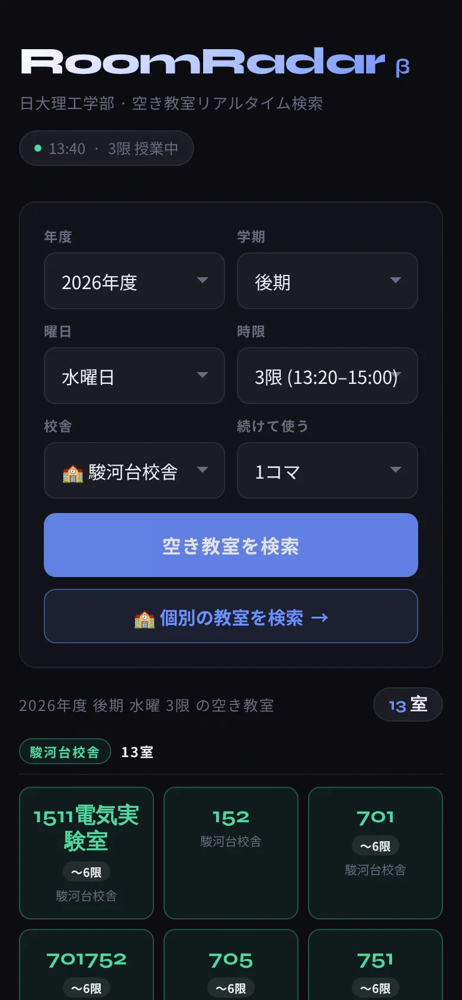

RoomRadar 空き教室、すぐ見つかる。 Find Empty Classrooms. Instantly. 立刻找到空教室。
時間割をもとに、いま使える教室をすぐ一覧表示。 See which rooms are free right now, based on the class timetables. 根据课程表，立刻列出现在可用的教室。
今すぐ使う Open RoomRadar 立即使用 →登録不要・無料・ブラウザで開くだけNo sign-up · Free · Opens in your browser无需注册 · 免费 · 浏览器直接打开
※ RoomRadar 運営学生による非公式の学内アンケートより * From an unofficial student survey run by the RoomRadar team * 来自RoomRadar运营学生进行的非官方问卷
課題The problem问题所在
こんな経験、ありませんか？Sound familiar?有过这样的经历吗？
- 空き教室を探して、タワー・スコラを上から下まで歩き回った。Wandered up and down Tower Schola looking for an empty room.为了找空教室，把塔楼从上到下跑了个遍。
- 「空き」だと思って入ったら、授業中だった。Walked into a class that was in session.以为是空教室推门进去，结果正在上课。
- 教室探しだけで、平均15〜20分を毎回ロスしている。Losing 15–20 minutes on average just to find a room.光是找教室平均就要花15〜20分钟。運営の非公式アンケートよりFrom our unofficial survey来自运营方的非官方问卷
機能Features功能介绍
RoomRadarでできることWhat RoomRadar doesRoomRadar能做什么
開くだけで、いま使える教室Open it, see what's free打开即看可用教室
検索ボタンを押さなくても、開いた瞬間に今の時限（休み時間なら次の時限）の空き教室が出ます。No need to press Search: rooms free in the current period (or the next one during breaks) appear right away.无需点击搜索，打开即显示当前时段（课间则为下一时段）的空教室。
続けて空いている教室もFree for 2+ periods连续空闲的教室
「続けて使う」で2〜3コマを選ぶと、その間ずっと空いている教室だけに。「〜6限」で何限まで空いているかも分かります。Pick 2–3 periods under 「続けて使う」 to see rooms free the whole time. A 「〜6限」 badge shows how long each stays free.在“続けて使う”中选择2〜3节，只显示一直空着的教室。“〜6限”标签显示可用到第几节。
教室ごとの1週間Any room's week单个教室的一周
教室名や番号（例: S303）で探すと、その教室の月〜土×1〜6限の空きを表で確かめられます。Search a room (e.g. S303) to see its week at a glance, Mon–Sat × periods 1–6.按教室名称或编号（如S303）搜索，即可查看该教室周一至周六×第1〜6节的空闲表。
使われていたら報告Report a busy room被占用时举报
時間割にない授業などで使われていたら報告できます。2件以上で「使用中の可能性」と表示され、ほかの人に伝わります。If a room is in use (e.g. an unscheduled class), report it. With 2+ reports it's marked 「使用中の可能性」 for others.如发现教室被占用（如课表外授课），可以举报。2条以上后会显示“使用中の可能性”，提醒其他人。
- 隔週の授業だけの教室は別枠で表示Rooms with alternate-week classes are listed separately只有隔周课程的教室单独显示
- 年度・学期を切り替えられるSwitch the academic year and term可切换学年和学期
- 運営が確認できた教室変更を反映Room changes we've confirmed are reflected反映运营方已确认的教室变更
「空き」は時間割上の空きで、使ってよいという許可ではありません。“Free” means free on the timetable, not permission to use the room.“空闲”仅指课表上空闲，并非使用许可。

使い方How to use使用方法
3ステップで使える3 simple steps三步即可使用
- 1
サイトを開くOpen the site打开网站
開いた瞬間に、いま使える教室が出ます。登録やインストールは要りません。Rooms free right now appear immediately. No sign-up or install.打开后立即显示现在可用的教室。无需注册或安装。
- 2
必要なら条件を変えるChange the search if needed需要时更改条件
曜日・時限・校舎や「続けて使う」コマ数を選んで「空き教室を検索」。Pick the day, period, building or how many periods in a row, then tap 「空き教室を検索」.选择星期、时段、教学楼或连续节数，点击“空き教室を検索”。
- 3
ドア越しに確認して使うCheck at the door在门口确认后使用
時間割にない授業や急な変更もあるので、入る前にドア越しに確認を。There may be unscheduled classes or changes, so check through the door first.可能有课表外的课程或临时变更，进门前请先确认。
みんなで使うShared space共享空间
空き教室は、
みんなで使う場所です。Empty classrooms are shared spaces.空教室是大家共用的地方。
使う目的は人それぞれ。お互いの目的を尊重して、周りに配慮して使いましょう。Everyone uses them differently. Respect each other and be considerate.使用目的因人而异。请互相尊重，照顾周围的人。
- 授業が優先です。空きと出ていても使われていることがあるので、入る前に必ずドア越しに確認を。Classes come first. A room shown as free may still be in use, so always check through the door first.课程优先。即使显示空闲也可能有人在用，进门前请务必确认。
- 静かに学習したいときは、図書館か1号館のCSTギャラリーへ。For quiet study, head to the library or the CST Gallery in Building 1.需要安静学习时，请前往图书馆或1号馆的CST Gallery。
- テスト運用中（12/19まで予定）のため、検索結果が実際の使用状況と違うことがあります。This is a trial (planned until Dec 19), so results may differ from actual use.目前为试运营（预计至12月19日），搜索结果可能与实际使用情况不同。
あなたの声で、
もっと良くなる。
Help us make it better.
你的反馈让它更好。
About
このサービスについてAbout this service关于本服务
本サービスは、学生が「自主創造プロジェクト」の一環として開発・運営している試験運用中のサービスです。大学が公式に提供するサービスではありません。This service is developed and run by students as part of Nihon University's student project program and is currently in trial operation. It is not an official service provided by the university.本服务是学生作为日本大学“自主创造项目”的一环开发和运营的、正在试运营中的服务，并非大学官方提供的服务。
教務ページで公開されている時間割表（2025・2026年度）をもとに、授業が入っていない教室を表示しています。It lists rooms with no scheduled class, based on the published timetables (AY2025–2026).根据公开的课程表（2025・2026学年）显示没有排课的教室。
運営・データ・情報の扱い・開発メンバーTeam, data & privacy运营·数据·信息处理·开发成员
さあ、教室を探しに行こう。
Stop wandering.
Start searching.
别再乱走了。
立刻开始搜索。
アプリのインストール不要。ブラウザだけで今すぐ使えます。 No app install needed. Works in any browser, right now. 无需安装应用。现在就可以在浏览器中使用。
RoomRadarを開く Open RoomRadar 打开RoomRadar →
最新情報・新機能・お役立ちTipsをInstagramで発信中。フォローして空き教室さがしをもっと快適に。 Latest updates, new features, and handy tips on Instagram. Follow us for a smoother classroom hunt. 在Instagram发布最新资讯、新功能和实用小贴士。关注我们，让找空教室更轻松。
フォローする Follow us 关注我们